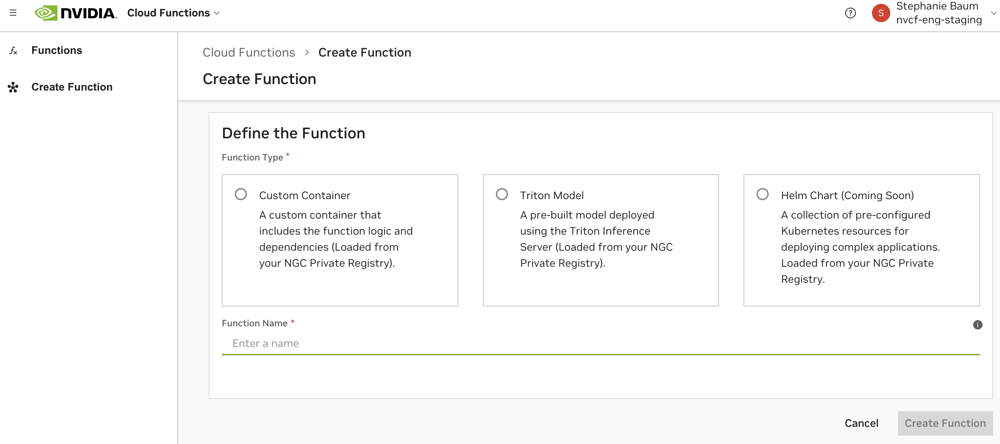

Function Creation
This page describes the steps to create a function within Cloud Functions.
Attention
Please ensure before function creation, you’ve installed and configured the NGC CLI for working with the NGC Private Registry.
Functions can be created in one of three ways, listed below, and also visible in the Cloud Functions UI.
Custom Container
Enables any container-based workload as long as the container exposes an inference endpoint and a health check.
Option to leverage any server, ex. PyTriton, FastAPI, Triton.
More easily take advantage of Cloud Functions features such as the Asset Management API for input sizes >5MB, HTTP streaming or gRPC, and partial response reporting.
Helm Chart
Enables orchestration across multiple containers. For complex use cases where a single container isn’t flexible enough.
Requires one “mini-service” container defined as the inference entry point for the function.
Does not support partial response reporting, gRPC or HTTP streaming-based invocation.
Working with NGC Private Registry
Function creation requires your model, container, helm chart and/or static resources to be hosted within NGC Private Registry as a prerequisite. Follow the steps below to optimally configure the NGC CLI to work with NGC Private Registry and Cloud Functions.
Warning
NGC Private Registry has size constraints on layers, images, models and resources.
Ensure that your uploaded resources conform to these constraints.
Generate an NGC Personal API Key
Do this by navigating to the Personal Keys Page. For more details see Generate an NGC Personal API Key.
Note
It’s recommended that the API Key that you generate includes both Cloud Functions and Private Registry scopes to enable ideal Cloud Functions workflows.
Download & Configure the NGC CLI
Navigate to the NGC CLI Installer Page to download the CLI and follow the installation instructions for your platform.
Find your NGC organization name within the NGC Organization Profile Page. This is not the Display Name. For example:
qdrlnbkss123.Run
ngc config setand input the Personal API Key generated in the previous step, along with your organization name. If prompted, default tono-teamandno-ace.
1> ngc config set
2Enter API key [****bi9Z]. Choices: [<VALID_APIKEY>, 'no-apikey']: $API_KEY
3Enter CLI output format type [json]. Choices: ['ascii', 'csv', 'json']: json
4Enter org [ax3ysqem02xw]. Choices: ['$ORG_NAME']: $ORG_NAME
5Enter team [no-team]. Choices: ['no-team']:
6Enter ace [no-ace]. Choices: ['no-ace']:
Authenticate with NGC Docker Registry
Run
docker login nvcr.ioand input the following, note$oauthtokenis the actual string to input, and$API_KEYis the Personal API key generated in the first step.
1> docker login nvcr.io
2Username: $oauthtoken
3Password: $API_KEY
(Optional) Push a Container to the NGC Private Registry
You should now be able to push a container to the NGC Private Registry. Optionally, validate this by pushing an example container from the samples repository:
First clone and build the docker image.
1> git clone https://github.com/NVIDIA/nv-cloud-function-helpers.git
2> cd nv-cloud-function-helpers/examples/fastapi_echo_sample
3> docker build . -t fastapi_echo_sample
Now tag and push the docker image to the NGC Private Registry.
1> docker tag fastapi_echo_sample:latest nvcr.io/$ORG_NAME/fastapi_echo_sample:latest
2> docker push nvcr.io/$ORG_NAME/fastapi_echo_sample:latest
Warning
Note that any additional slashes in the path when tagging and pushing to nvcr.io will be detected by Private Registry as specifying a team. This is most likely not what you want.
Once this finishes, you’ll now be able to see the new container in the NGC Private Registry Containers Page and it will be available for use in function creation.
Best Practices with NGC Docker Registry and Cloud Functions
Container Versioning
Ensure that any resources that you tag for deployment into production environments are not simply using “latest” and are following a standard version control convention.
During autoscaling, a function scaling any additional instances will pull the same specificed container image and version. If version is set to “latest”, and the “latest” container image is updated between instance scaling, this can lead to undefined behavior.
Function versions created are immutable, this means that the container image and version cannot be updated for a function without creating a new version of the function.
Usage of NGC Teams
For easier handling of authorization and accessibility, we recommend pushing your containers, helm charts, models and resources to the root of your NGC organization (i.e. “No Team”), not to a team within the organization.
Note that any additional slashes in the path when tagging and pushing to
nvcr.iowill be detected as an NGC team.
Container-Based Function Creation
Container-based functions require building and pushing a Cloud Functions compatible Docker container image to the NGC Private Registry.
Attention
Before proceeding, ensure that you have the NGC CLI installed and configured with an API Key that has the required scopes for Cloud Functions and Private Registry.
See Working with NGC Private Registry for instructions.
Resources
Example containers can be found here.
The repository also contains helper functions that are useful when authoring your container, including:
Helpers that parse Cloud Functions-specific parameters on invocation
Helpers that can be used to instrument your container with Cloud Functions compatible logs
Helpers for working with assets
After container creation, but before proceeding to deployment, it is strongly recommended to validate your container’s configuration locally, see Deployment Validation.
It’s always a best practice to emit logs from your inference container. See Logging and Metrics for how to add logs to your container. Cloud Functions also supports third-party logging and metrics emission from your container.
Container Endpoints
Any server can be implemented within the container, as long as it implements the following:
For HTTP-based functions, a health check endpoint that returns a 200 HTTP Status Code on success.
For gRPC-based functions, a standard gRPC health check. See these docs for more info also gRPC Health Checking.
An inference endpoint (this endpoint will be called during function invocation)
These endpoints are expected to be served on the same port, defined as the inferencePort.
Warning
Cloud Functions reserves the following ports on your container for internal monitoring and metrics:
Port
8080Port
8010
Cloud Functions also expects the following directories in the container to remain read-only for caching purposes:
/config/directoryNested directories created inside
/config/
Composing a FastAPI Container
It’s possible to use any container with Cloud Functions as long as it implements a server with the above endpoints. The below is an example of a FastAPI-based container compatible with Cloud Functions. Clone the full example here.
Create the “requirements.txt” File
1fastapi==0.110.0
2uvicorn==0.29.0
Implement the Server
1import os
2import time
3import uvicorn
4from pydantic import BaseModel
5from fastapi import FastAPI, status
6from fastapi.responses import StreamingResponse
7
8
9app = FastAPI()
10
11class HealthCheck(BaseModel):
12 status: str = "OK"
13
14# Implement the health check endpoint
15@app.get("/health", tags=["healthcheck"], summary="Perform a Health Check", response_description="Return HTTP Status Code 200 (OK)", status_code=status.HTTP_200_OK, response_model=HealthCheck)
16def get_health() -> HealthCheck:
17 return HealthCheck(status="OK")
18
19class Echo(BaseModel):
20 message: str
21 delay: float = 0.000001
22 repeats: int = 1
23 stream: bool = False
24
25
26# Implement the inference endpoint
27@app.post("/echo")
28async def echo(echo: Echo):
29 if echo.stream:
30 def stream_text():
31 for _ in range(echo.repeats):
32 time.sleep(echo.delay)
33 yield f"data: {echo.message}\n\n"
34 return StreamingResponse(stream_text(), media_type="text/event-stream")
35 else:
36 time.sleep(echo.delay)
37 return echo.message*echo.repeats
38
39# Serve the endpoints on a port
40if __name__ == "__main__":
41 uvicorn.run(app, host="0.0.0.0", port=8000, workers=int(os.getenv('WORKER_COUNT', 500)))
Note in the example above, the function’s configuration during creation will be:
Inference Protocol: HTTP
Inference Endpoint:
/echoHealth Endpoint:
/healthInference Port (also used for health check):
8000
Create the Dockerfile
1FROM python:3.10.13-bookworm
2
3ENV WORKER_COUNT=10
4
5WORKDIR /app
6
7COPY requirements.txt ./
8
9RUN python -m pip install --no-cache-dir -U pip && \
10 python -m pip install --no-cache-dir -r requirements.txt
11
12COPY http_echo_server.py /app/
13
14CMD uvicorn http_echo_server:app --host=0.0.0.0 --workers=$WORKER_COUNT
Build the Container & Create the Function
See the Quickstart for the remaining steps.
Composing a PyTriton Container
NVIDIA’s PyTriton is a Python native solution of Triton inference server. A minimum version of 0.3.0 is required.
Create the “requirements.txt” File
This file should list the Python dependencies required for your model.
Add nvidia-pytriton to your
requirements.txtfile.
Here is an example of a requirements.txt file:
1--extra-index-url https://pypi.ngc.nvidia.com
2opencv-python-headless
3pycocotools
4matplotlib
5torch==2.1.0
6nvidia-pytriton==0.3.0
7numpy
Create the “run.py” File
Your
run.pyfile (or similar Python file) needs to define a PyTriton model.This involves importing your model dependencies, creating a PyTritonServer class with an
__init__function, an_infer_fnfunction and arunfunction that serves the inference_function, defining the model name, the inputs and the outputs along with optional configuration.
Here is an example of a run.py file:
1import numpy as np
2from pytriton.model_config import ModelConfig, Tensor
3from pytriton.triton import Triton, TritonConfig
4import time
5....
6class PyTritonServer:
7 """triton server for timed_sleeper"""
8
9 def __init__(self):
10 # basically need to accept image, mask(PIL Images), prompt, negative_prompt(str), seed(int)
11 self.model_name = "timed_sleeper"
12
13 def _infer_fn(self, requests):
14 responses = []
15 for req in requests:
16 req_data = req.data
17 sleep_duration = numpy_array_to_variable(req_data.get("sleep_duration"))
18 # deal with header dict keys being lowerscale
19 request_parameters_dict = uppercase_keys(req.parameters)
20 time.sleep(sleep_duration)
21 responses.append({"sleep_duration": np.array([sleep_duration])})
22
23 return responses
24
25 def run(self):
26 """run triton server"""
27 with Triton(
28 config=TritonConfig(
29 http_header_forward_pattern="NVCF-*", # this is required
30 http_port=8000,
31 grpc_port=8001,
32 metrics_port=8002,
33 )
34 ) as triton:
35 triton.bind(
36 model_name="timed_sleeper",
37 infer_func=self._infer_fn,
38 inputs=[
39 Tensor(name="sleep_duration", dtype=np.uint32, shape=(1,)),
40 ],
41 outputs=[Tensor(name="sleep_duration", dtype=np.uint32, shape=(1,))],
42 config=ModelConfig(batching=False),
43 )
44 triton.serve()
45if __name__ == "__main__":
46 server = PyTritonServer()
47 server.run()
Create the “Dockerfile”
Create a file named
Dockerfilein your model directory.It’s strongly recommended to use NVIDIA-optimized containers like CUDA, Pytorch or TensorRT as your base container. They can be downloaded from the NGC Catalog.
Make sure to install your Python requirements in your
Dockerfile.Copy in your model source code, and model weights unless you plan to host them in NGC Private Registry.
Here is an example of a Dockerfile:
1FROM nvcr.io/nvidia/cuda:12.1.1-devel-ubuntu22.04
2RUN apt-get update && apt-get install -y \
3 git \
4 python3 \
5 python3-pip \
6 python-is-python3 \
7 libsm6 \
8 libxext6 \
9 libxrender-dev \
10 curl \
11 && rm -rf /var/lib/apt/lists/*
12WORKDIR /workspace/
13
14# Install requirements file
15COPY requirements.txt requirements.txt
16RUN pip install --no-cache-dir --upgrade pip
17RUN pip install --no-cache-dir -r requirements.txt
18ENV DEBIAN_FRONTEND=noninteractive
19
20# Copy model source code and weights
21COPY model_weights /models
22COPY model_source .
23COPY run.py .
24
25# Set run command to start PyTriton to serve the model
26CMD python3 run.py
Build the Docker Image
Open a terminal or command prompt.
Navigate to the
my_modeldirectory.Run the following command to build the docker image:
docker build -t my_model_image .
Replace my_model_image with the desired name for your docker image.
Push the Docker Image
Before beginning, ensure that you have authenticated with the NGC Docker Registry.
Tag and push the docker image to the NGC Private Registry.
1> docker tag my_model_image:latest nvcr.io/$ORG_NAME/my_model_image:latest
2> docker push nvcr.io/$ORG_NAME/my_model_image:latest
Create the Function
Create the function via API by running the following curl with an
$API_KEYand your$ORG_NAME. In this example, we defined the inference endpoint as8000and are using the default inference and health endpoint paths.
1 curl --location 'https://api.ngc.nvidia.com/v2/nvcf/functions' \
2 --header 'Content-Type: application/json' \
3 --header 'Accept: application/json' \
4 --header 'Authorization: Bearer $API_KEY' \
5 --data '{
6 "name": "my-model-function",
7 "inferenceUrl": "/v2/models/my_model_image/infer",
8 "healthUri": "/v2/health/ready",
9 "inferencePort": 8000,
10 "containerImage": "nvcr.io/$ORG_NAME/my_model_image:latest"
11 }'
Additional Examples
See more examples of PyTriton containers that are Cloud Functions compatible here.
Triton-based Container Configuration
NVIDIA Cloud Functions is designed to work natively with Triton Inference Server based containers, including leveraging metrics and health checks from the server.
Pre-built Triton docker images can be found within NGC’s Container catalog. A minimum version of 23.04 (2.33.0) is required.
Configuration
The default health /v2/health/ready, port 8000, and inference endpoint (v2/models/$MODEL_NAME/infer) work automatically with Triton-based containers.
Note
The docker image’s run command must be configured with the following:
CMD tritonserver --model-repository=${MODEL_PATH} --http-header-forward-pattern NVCF-.*
Here is an example of a Dockerfile:
1FROM nvcr.io/nvidia/tritonserver:24.01-py3
2
3# install requirements file
4COPY requirements.txt requirements.txt
5RUN pip install --no-cache-dir --upgrade pip
6RUN pip install --no-cache-dir -r requirements.txt
7
8COPY model_repository /model_repository
9
10ENV CUDA_MODULE_LOADING LAZY
11ENV LOG_VERBOSE 0
12
13CMD tritonserver --log-verbose ${LOG_VERBOSE} --http-header-forward-pattern (nvcf-.*|NVCF-.*) \
14 --model-repository /model_repository/ --model-control-mode=none --strict-readiness 1
Creating Functions with NGC Models & Resources
When creating a function, models and resources can be mounted to the function instance. The models will be available under /config/models/{modelName} and /config/resources/{resourceName} where modelName and resourceName are specified as part of the API request.
Here is an example where a model and resource are added to a function creation API call, for an echo sample function:
1curl -X 'POST' \
2 'https://api.ngc.nvidia.com/v2/nvcf/functions' \
3 -H 'Authorization: Bearer $API_KEY' \
4 -H 'accept: application/json' \
5 -H 'Content-Type: application/json' \
6 -d '{
7 "name": "echo_function",
8 "inferenceUrl": "/echo",
9 "containerImage": "nvcr.io/$ORG_NAME/echo:latest",
10 "apiBodyFormat": "CUSTOM",
11 "models": [
12 {
13 "name": "simple_int8",
14 "version": "1",
15 "uri": "v2/org/cf/$ORG_NAME/models/simple_int8/versions/1/zip"
16 }
17 ],
18 "resources": [
19 {
20 "name": "simple_resource",
21 "version": "1",
22 "uri": "v2/org/cf/$ORG_NAME/resources/simple_resource/versions/1/zip"
23 }
24 ]
25}'
Within the container, once the function instance is deployed, the model would be mounted at /config/models/simple_int8 and resource mounted at /config/resources/simple_int8
Creating gRPC-based Functions
Cloud Functions supports function invocation via gRPC. During function creation, specify that the function is a gRPC function by setting the “Inference Protocol”, or inferenceUrl field to /grpc.
Prerequisites
The function container must implement a gRPC port, endpoint and health check. The health check is expected to be served by the gRPC inference port, there is no need to define a separate health endpoint path.
See gRPC health checking.
See an example container with a gRPC server that is Cloud Functions compatible.
gRPC Function Creation via UI
In the Function Creation Page, set the “Inference Protocol” to gRPC and port to whatever your gRPC server has implemented.
gRPC Function Creation via CLI
When creating the gRPC function, set the --inference-url argument to /grpc:
1 ngc cf function create --inference-port 8001 --container-image nvcr.io/$ORG_NAME/grpc_echo_sample:latest --name my-grpc-function --inference-url /grpc
gRPC Function Creation via API
When creating the gRPC function, set the inferenceURl field to /grpc:
1 curl --location 'https://api.ngc.nvidia.com/v2/nvcf/functions' \
2 --header 'Content-Type: application/json' \
3 --header 'Accept: application/json' \
4 --header 'Authorization: Bearer $API_KEY' \
5 --data '{
6 "name": "my-grpc-function",
7 "inferenceUrl": "/grpc",
8 "inferencePort": 8001,
9 "containerImage": "nvcr.io/$ORG_NAME/grpc_echo_sample:latest"
10 }'
gRPC Function Invocation
See gRPC Invocation for details on how to authenticate and invoke your gRPC function.
Available Container Variables
The following is a reference of available variables via the headers of the invocation message (auto-populated by Cloud Functions), accessible within the container.
For examples of how to extract and use some of these variables, see NVCF Container Helper Functions.
Name |
Description |
|---|---|
NVCF-REQID |
Request ID for this request. |
NVCF-SUB |
Message subject. |
NVCF-NCAID |
Function’s organization’s NCA ID. |
NVCF-FUNCTION-NAME |
Function name. |
NVCF-FUNCTION-ID |
Function ID. |
NVCF-FUNCTION-VERSION-ID |
Function version ID. |
NVCF-ASSET-DIR |
Asset directory path. Not available for helm deployments. |
NVCF-LARGE-OUTPUT-DIR |
Large output directory path. |
NVCF-MAX-RESPONSE-SIZE-BYTES |
Max response size in bytes for the function. |
NVCF-NSPECTID |
NVIDIA reserved variable. |
NVCF-BACKEND |
Backend or “Cluster Group” the function is deployed on. |
NVCF-INSTANCETYPE |
Instance type the function is deployed on. |
NVCF-REGION |
Region or zone the function is deployed in. |
NVCF-ENV |
Spot environment if deployed on spot instances. |
Adding Partial Response (Progress)
Below are instructions on setting up output directories and efficiently tracking and communicating inferencing progress using Cloud Functions. This functionality is only supported for container-based functions.
Cloud Functions automatically configures the output directory for you. To access the path, simply read the
NVCF-LARGE-OUTPUT-DIRheader.NVCF-LARGE-OUTPUT-DIRpoints to the directory for that particularrequestId.To enable partial progress reporting, you will need to store partial and completed outputs, and create a
progressfile in the output directory.Once the output file and progress file are correctly set up in the output directory under the correct request id, Cloud Functions will automatically detect them.
When using the invocation API to poll for a response,
progresswill be returned as the headerNVCF-PERCENT-COMPLETE, along with any partial response data.
Storing Partial and Complete Outputs
When your Custom BLS generates large outputs, save them temporarily with the “*.partial” extension inside the
NVCF-LARGE-OUTPUT-DIRdirectory. For instance, if you’re writing an image, name itimage1.partial.Once the writing of the output file is complete, rename it from “*.partial” to its appropriate extension. Continuing with our example, rename
image1.partialtoimage1.jpg.
Creating a Progress File
Cloud Functions actively observes the output directory for a file named progress. This file is used to communicate progress and partial responses back to the caller.
This file should contain well-formed JSON data. Structure the JSON content as follows:
1{
2 "id": "{requestId}",
3 "progress": 50,
4 "partialResponse": {
5 "exampleKey": "Insert any well-formed JSON here, but ensure its size is less than 250K"
6 }
7}
Replace requestId with the actual request id if it’s present. Modify the progress integer as needed, ranging from 0 (just started) to 100 (fully complete). Within partialResponse, insert any JSON content you want to send as a partial response, making sure it’s smaller than 250KB.
Best Practices
Always use the “.partial” extension to avoid sending partial or incomplete data.
Rename to the final extension only when the writing process is fully complete.
Ensure your progress file remains under 250KB to maintain efficiency and avoid errors.
Helm-Based Function Creation
Cloud functions support helm-based functions for orchestration across multiple containers.
Prerequisites
The helm chart must have a “mini-service” container defined, which will be used as the inference entry point.
The name of this service in your helm chart should be supplied by setting
helmChartServiceNameduring the function definition. This allows Cloud Functions to communicate and make inference requests to the “mini-service” endpoint.
Attention
The servicePort defined within the helm chart should be used as the inferencePort supplied during function creation. Otherwise, Cloud Functions will not be able to reach the “mini-service”.
Ensure you have the NGC CLI configured and have pushed your helm chart to NGC Private Registry. Refer to Managing Helm Charts Using the NGC CLI.
Secret Management
For pulling containers defined as part of the helm chart from NGC Private Registry, a new value named ngcImagePullSecretName needs to be defined in the chart.The value is referred to in deployment spec as spec.imagePullSecrets.name of pods in the chart.
Warning
Containers defined in the helm chart should be in the same NGC Organization and Team that the helm chart itself is being pulled from.
Create a Helm-based Function
Ensure your helm chart is uploaded to NGC Private Registry and adheres to the Prerequisites listed above.
Create the function:
Include the following additional parameters in the function definition
helmCharthelmChartServiceName
The
helmChartproperty should be set to the URL hosted by the NGC Model Registry pointing to the helm chart that will deploy the “mini-service”. Please note, that this helm chart URL should be accessible to the NGC org in which the function will eventually be deployed. The helm chart URL should follow the format:https://helm.ngc.nvidia.com/$ORG_ID/$TEAM_NAME/charts/$NAME-X.Y.Z.tgzfor example,https://helm.ngc.nvidia.com/abc123/teamA/charts/nginx-0.1.5.tgzwould be a valid chart URL buthttps://helm.ngc.nvidia.com/abc123/teamA/charts/nginx-0.1.5-hello.tgzwould not.The
helmChartServiceNameis used for checking if the “mini-service” is ready for inference and is also scraped for function metrics. At this time, templatized service names are not supported. This must match the service name of your “mini-service” with the exposed entry point port.Important: The Helm chart name should not contain underscores or other special symbols, as that may cause issues during deployment.
Example Creation via API
Please see our sample helm chart used in this example for reference.
Below is an example function creation API call creating a helm-based function:
1curl -X 'POST' \
2 'https://api.ngc.nvidia.com/v2/nvcf/functions' \
3 -H 'Authorization: Bearer $API_KEY' \
4 -H 'accept: application/json' \
5 -H 'Content-Type: application/json' \
6 -d '{
7 "name": "function_name",
8 "inferenceUrl": "v2/models/model_name/versions/model_version/infer",
9 "inferencePort": 8001,
10 "helmChart": "https://helm.ngc.nvidia.com/$ORG_ID/$TEAM_NAME/charts/inference-test-1.0.tgz",
11 "helmChartServiceName": "service_name",
12 "apiBodyFormat": "CUSTOM"
13}'
Note
For gRPC-based functions, set "inferenceURL" : "/gRPC". This signals to Cloud Functions that the function is using gRPC protocol and is not expected to have a /gRPC endpoint exposed for inferencing requests.
Proceed with function deployment and invocation normally.
Limitations
- When using helm charts, the following limitations need to be taken into consideration
Automatic mounting of NGC Models and Resources for your container is not supported.
For any downloads (such as of assets or models) occurring within your function’s containers, download size is limited by the disk space on the VM - for GFN this is 100GB approximately, and for other clusters this limit will vary.
Progress/partial response reporting is not supported, including any additional artifacts generated during inferencing. Consider opting for HTTP streaming or gRPC bidirectional support.
Supported k8s artifacts under Helm Chart Namespace are listed below. Others will be rejected:
Deployment
Service
ServiceAccount
Role & RoleBindings
ConfigMaps
Secrets
Helm Chart Overrides
To override keys in your helm chart values.yml, you can provide the configuration parameter and supply corresponding key-value pairs in JSON format which you would like to be overridden when the function is deployed.
1curl -X 'POST' \
2 'https://api.ngc.nvidia.com/v2/nvcf/deployments/functions/fe6e6589-12bb-423a-9bf6-8b9d028b8bf4/versions/fe6e6589-12bb-423a-9bf6-8b9d028b8bf4' \
3 -H 'Authorization: Bearer $API_KEY' \
4 -H 'accept: application/json' \
5 -H 'Content-Type: application/json' \
6 -d '{
7 "deploymentSpecifications": [{
8 "gpu": "L40",
9 "backend": "OCI",
10 "maxInstances": 2,
11 "minInstances": 1,
12 "configuration": {
13 "key_one": "<value>",
14 "key_two": { "key_two_subkey_one": "<value>", "key_two_subkey_two": "<value>" }
15 ...
16 },
17 {
18 "gpu": "T10",
19 "backend": "GFN",
20 "maxInstances": 2,
21 "minInstances": 1
22 }]
23 }'